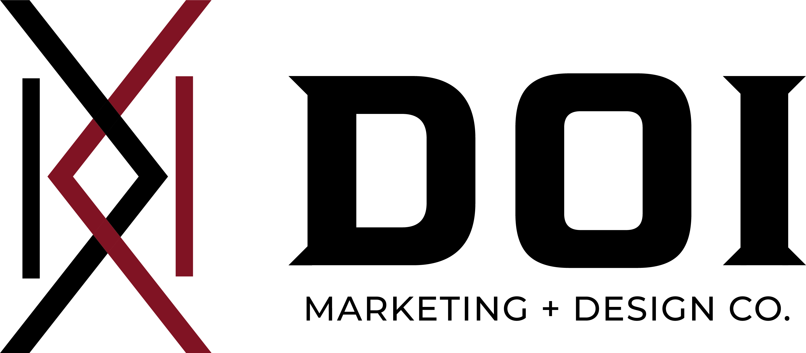

Building a brand from zero.
A self-directed exercise: build a complete brand identity system, mark, color, typography, voice, with the same rigor I bring to company and employer brands.

Why I built this.
After years of building brand systems for other companies, I wanted to apply the same process to myself, start with nothing, and make every decision deliberately: a logo mark, a color palette, a typographic system, and a voice. The goal wasn't just a nice-looking result. It was to demonstrate the full process, end to end, the same way I'd approach it for an employer's brand.
The Brief (to myself)
Design a personal mark that works at any size, from a favicon to a large format print, and carries meaning beyond the surface. It needed to feel intentional, not decorative.
The Approach
Start with the mark, build outward. Every subsequent decision, color, type, voice, had to support and reinforce the mark's geometry and meaning.

{{ m.title }}
{{ m.body }}
A restrained palette built around one accent color used sparingly, for emphasis, never for large fills. The goal was a system where every color choice felt deliberate, not decorative.
Bebas Neue
Headlines and large statements. Condensed, confident, all caps.
Cormorant Garamond
Pull quotes and emphasis. Italic, editorial, human.
Montserrat Light
Body copy, labels, and interface. Quiet, legible, neutral.
A brand system built the way I'd build one for a team. Every decision intentional, every detail able to be explained.